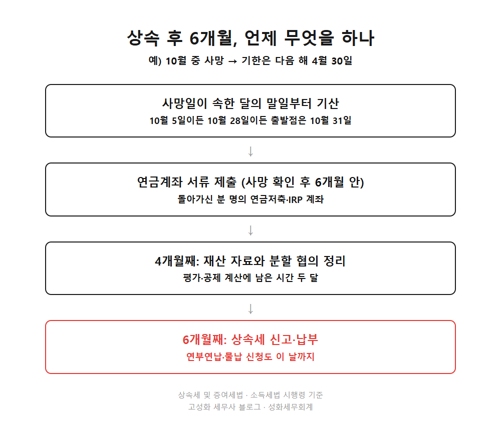
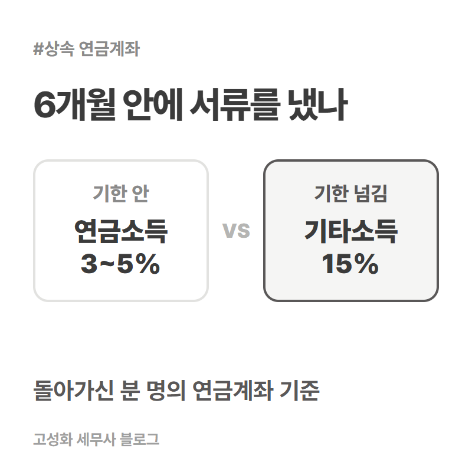

← 세무칼럼 목록
부동산·상속·증여

상속 후 6개월 안에 할 일, 연금계좌까지 세금 일정 5가지
가족이 세상을 떠난 뒤 6개월. 이 안에 끝내야 하는 세금 일정이 다섯 가지 있습니다.
상속세 신고와 납부, 재산 분할 정리, 돌아가신 분 명의의 연금계좌 서류 제출, 연부연납·물납 신청, 그리고 지방세 확인입니다. 하나라도 놓치면 세금이 늘어납니다.
기한은 사망일이 아니라 사망일이 속한 달의 말일부터 셉니다. 10월 중에 돌아가셨다면 날짜와 상관없이 10월 31일이 출발점이고, 상속세 신고기한은 다음 해 4월 30일입니다.
1. 상속세 신고·납부, 말일부터 6개월
한눈에 보기


정리하면
상속 후 6개월 안에 할 일은 결국 신고 하나로 모입니다. 다만 그 신고서 안에 분할 협의와 재산 평가, 공제 계산이 동시에 걸려 있어서 혼자 순서를 잡기가 쉽지 않습니다.
이미 몇 달이 지나 늦었다고 생각하셔도 괜찮습니다. 남은 기간에 맞춰 무엇부터 할지 정하면 되고, 기한을 넘겼더라도 빨리 신고·납부할수록 날마다 붙는 가산세가 멈춥니다.
상담 전에 무엇을 챙기면 좋은지는 이 글에 정리해두었습니다. 자료가 다 모이지 않았어도 지금 있는 것만 들고 문의 주세요.
https://blog.naver.com/mytaxpro/224446323075
본문 전체와 근거 조문은 블로그에서 확인하실 수 있습니다.